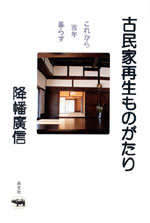

|
|
外国文学・ヤングアダルト | ||||||
【シリーズ 愛書・探本・蔵書 】 |
|||||||
| ホセ・アントニオ・ミリャン 安藤哲行訳 | |||||||
| 四六判 112頁 | |||||||
| 定価1680（本体1600円） | |||||||
| 4-7949-2664-2 C0397 | |||||||
| 「昔むかし」と「おしまい」という言葉しか書かれていないちび本のユーモラスな冒険。ママはキャリアウーマン、パパは民法書。登場人物はすべて「本」である。ちび本は一人前になるために学校へ行ったり、著者達に会いにいったり、図書館にしのびこんだり……。ゆっくり成長すればいいというメッセージが心に沁みる、大人も子どもも楽しめる本。 | |||||||
 |
外国文学・読書 |
| 【シリーズ 愛書・探本・蔵書 】 古書の聖地 |
|
| ポール・コリンズ 中尾真理訳 | |
| 四六判 360頁 | |
| 定価2940（本体2800円） | |
| 4-7949-2665-0 C0398 | |
| イギリスはウェールズの石づくりの小さな町ヘイ・オン・ワイ。住民は1500人ながら、古本屋が40軒、数百万冊の本が隠れている知る人ぞ知る「愛書家の聖地」。アメリカの作家が、あこがれのこの地に家族とともに移り住んだ。 書棚で珠玉の奇書を見つける至福。古書で町を再生した「ヘイの王様」の謎の素顔……。本の楽園での日々の冒険をユーモラスに綴る。 |
| 児童文学・読書案内 | |||||||
| 永遠の少年少女 アンデルセンからハリー・ポッターまで |
|||||||
| アリソン･ルーリー 麻生九美訳 | |||||||
| 四六判 320頁 | |||||||
| 定価2310円（本体2200円） | |||||||
| 4-7949-6648-2 C0098 | |||||||
| すぐれた児童文学作家は、大人になっても子どもの心をもちつづけている。作家自身が永遠の少年少女なのだ。世界中で愛されているアンデルセン、『オズの魔法使い』『ムーミン』などの名作から現代のベストセラー『ハリー･ポッター』まで、作家の人生と作品との興味つきない関係を明かす。子どもの本の魅力と不思議を綴る最高の児童文学ガイド。 | |||||||
 |
児童・教育 | ||||||
| み〜んなそろって学校へ行きたい！ 「医療的ケアが必要な子どもたちの願い」 |
|||||||
| 井上夕香 監修・下川和洋 | |||||||
| A5 判 144頁 | |||||||
| 定価1365円（本体1300円） | |||||||
| 4-7949-6653-9 C8037 | |||||||
| 学校へ行くために、ほんの少しのお手伝いを必要としている子どもたちがいます。この「医療的ケア」が必要な子どもたちの多くは、学校になかなか受け入れてもらえずにいます。本書は、さまざまな障害を乗り越え、明るく前向きに生きる子どもたちと家族の姿をいきいきと描き、「医療的ケア」への社会的な理解と支援を訴えかけます。 | |||||||
| 医療・がん | |||||||
| がんは誰が治すのか 治癒のしくみと脳のはたらき |
|||||||
| 松野哲也 | |||||||
| 四六判 216頁 | |||||||
| 定価1680円（本体1600円） | |||||||
| 4-7949-6652-0 C0047 | |||||||
| 研究者として、がん根治のために、さまざまな研究を重ねてきた著者は、とくにプロポリスの成分を特定し、抗がん作用があることをつきとめた研究者として、知られている。自らもがん患者となり、生還したひとりである。がん体験と自らの研究を重ね合わせ語りながら、病院だけによらない、代替医療をも視野にいれた、がんに対する取り組み方を提案する。 | |||||||
| 料理 | |||||||
| スローな手づくり調味料 | |||||||
| 林弘子 | |||||||
| 四六判 208頁 | |||||||
| 定価1680円（本体1600円） | |||||||
| 4-7949-6650-4 C0077 | |||||||
| 麺汁、ウスターソース、トマトケチャップ、カレールー、豆板醤、などの調味料を自分でつくってみよう。これさえあれば、どんなに時にも、おいしく、砂糖も化学調味料も含まれない安全な料理づくりができる。その調味料の作り方を一挙に公開。だしの引き方、基本食材の保存法なども交え、家庭料理の基本がわかる。料理への一歩は、生活の基本。まさに調味料作りはまさに食育なのだ。 | |||||||
 |
建築 | ||||||
| 古民家再生ものがたり これから百年暮らす |
|||||||
| 降旗廣信 | |||||||
| 四六 判 208頁 | |||||||
| 定価1785円（本体1700円） | |||||||
| 4-7949-6651-2 C0052 | |||||||
建築家・降幡廣信は、70年代より、民家の再生にとり組んできた。誰もが民家を壊し新築するのが当たり前の時代、その家をどうしても遺したいという家族に背中を押されて、試行錯誤を繰り返してきた。中には町づくりに発展した例もあるという。それらの軌跡を、さまざまな具体例とともに紹介。民家のよさや歴史などについても、あわせて伝える貴重な記録。 |
|||||||
| エッセイ・サブカルチャー | |||||||
| うなされ上手 | |||||||
| 中川いさみ | |||||||
| 四六判 224頁 | |||||||
| 定価1470円（本体1400円） | |||||||
| 4-7949-2025-3 C0095 | |||||||
『クマのプー太郎』など、無類のギャグ漫画で世の青少年を爆笑の渦にまきこんだコミック作家・中川いさみ。「ホラーな世界」「日常の恐怖」「人体の神秘」「マスメディアの真実」の四部構成でおくる初のエッセイ集。哲学的ユーモアと独特の倫理で、世のおかしな事象を分析。艱難辛苦も笑いとばす、強い大人になるための一冊!? イラスト満載。 |
|||||||
| エッセイ | |||||||
| 植草さんについて知っていることを話そう | |||||||
| 高平哲郎 | |||||||
| 四六判 392頁 | |||||||
| 定価2730円（本体2600円） | |||||||
| 4-7949-6646-6 C0095 | |||||||
| 植草さんってどんな人？ 植草甚一とリアルタイムで時代をともにした人から、いまでもその足音を追い求めている人まで総勢25人と語りあった「植草甚一大全」ここに登場！ 著者の語りの相手は、タモリ、山下洋輔、平野甲賀、和田誠、坪内祐三、山本容子、谷川賢作ら。明治生まれで江戸人の植草さんの生き方、歩き方が、蘇ってくる。 | |||||||
 |
エッセイ | ||||||
| 植草甚一スクラップ・ブック9 第5回配本 ポーノグラフィ始末記 |
|||||||
| 植草甚一 | |||||||
| 四六判 256頁 | |||||||
| 定価1470円（本体1400円） | |||||||
| 4-7949-2569-7 C0390 | |||||||
| オリンピア・プレス版のヘンリー・ミラーをあさった時代までさかのぼるから、ＪＪの禁じられた文学とのつきあいは古い。おびただしいハード・ポルノや前衛的性文学を論じ、ホモ・セクシャルの世界まで探索する。エロス的観点をつらぬく、極めて独特な二〇世紀文学論！（解説・鍵谷幸信） | |||||||
 |
ジャズ | ||||||
| 植草甚一スクラップ・ブック14 第5回配本 ぼくたちにはミンガスが必要なんだ |
|||||||
| 植草甚一 | |||||||
| 四六判 272頁 | |||||||
| 定価1470円（本体1400円） | |||||||
| 4-7949-2574-3 C0373 | |||||||
| 「直立猿人」をはじめて聴いたときのあの新鮮な驚きが忘れられない！ 力強く温かいサウンドで、つねにぼくたちを勇気づけてくれた巨人・ミンガスをはじめ、セロニアス・モンク、エリック・ドルフィーという三人の強烈な個性を持った音楽家たちの魅力を語りつくす。きわめつけ植草式ジャズ論。（解説・諸岡敏行） | |||||||
| |
ジャズ | ||||||
| 植草甚一スクラップ・ブック19 第5回配本 ぼくの東京案内 |
|||||||
| 植草甚一 | |||||||
| 四六判 256頁 | |||||||
| 定価1470円（本体1400円） | |||||||
| 4-7949-2579-4 C0395 | |||||||
| 生まれ育った人形町界隈の思い出話から、若者の集まる新宿まで、変わりつづける街の表情から我らがＪＪ氏は何を読みとったのか__。半世紀以上にわたる東京とのつきあいや、親しい友人たちの姿を、独特の散歩術にのせて、いきいきと語りかける植草甚一自伝番外篇。（解説・木島始） | |||||||
| |
料理・店舗経営 | ||||||
| 女性のための「食べもの屋」開業術 | |||||||
| 勝身利子 | |||||||
| 四六判 212頁 | |||||||
| 定価1680円（本体1600円） | |||||||
| 4-7949−7628-3 C0077 | |||||||
| 食べるのが好き・料理も好き・食べてもらうのも大好きな女性へ、ちいさなお店の作り方を教えます。エリアの選び方から収支計画の作成まで丁寧に説明。12の女性店主の開業までの苦労と仕事の喜びの話も聞きました。外食・食品産業界で活躍の著者が、身の丈に合うお店作りを伝授。 | |||||||
晶文社出版の本 TEL.03-5688-6881 |
| 学校案内 | |||
| 専門学校各種学校案内 2006年度用 | |||
| 晶文社出版編集部編 | |||
| A5判 796頁 | |||
| 定価2100円（本体2000円） | |||
| 4-7949−9696-9 C7037 | |||
| 全国の専門学校2964校とユニークな教育を行っている各種の学校を８分野に分けて紹介。専門学校で取得できる40の国家資格および学べる内容から120のジャンルを設定し、学校ごとに表示。「取得資格早見表」では、取得できる資格が一目でわかるので、学校さがしが一段と便利に。'05年版までリスト掲載だった看護学校も本文で紹介。東京アカデミー提供の最新版「'05年度看護・医療系専門学校の入試難易度データ」掲載。 |
| 学校ガイド | |||
| 看護・医療 大学・短大・専門・各種 学校ガイド 2006年度用 | |||
| 晶文社出版編集部編 | |||
| A5判 582頁 | |||
| 定価2100円（本体2000円） | |||
| 4-7949−9706-X C7047 | |||
| 看護師、診療放射線技師、理学・作業療法士など18の国家資格の養成校を網羅し、スペシャリストをめざす人に最適。また、３年課程の看護学校１校あたりの掲載量を前年度版より大幅に増量。巻頭には、めざす職業から学校をさがすことができる「資格別目次」。学校案内には、入試競争率・国家試験の合格率も掲載。代ゼミ提供「大学入試難易ランキング」に加え、東京アカデミー提供の「'05年度看護・医療系専門学校の入試難易度データ」（折り込み）も掲載。 |
| 学校ガイド | |||
| 15歳からの専修・各種学校ガイド 2006年度用 | |||
| 晶文社出版編集部編 | |||
| A5判 272頁 | |||
| 定価1995円（本体1900円） | |||
| 4-7949-9716-7 C6037 | |||
| 中学新卒者を中心に、15歳という入学資格を対象にしぼったユニークな学校ガイド。全国の専修学校高等課程を完全掲載し、さらに各種学校やその他入学できる学校の計597校を紹介。大検予備校・サポート校についても掲載。9ジャンル別の目次で、興味ややりたいことに合わせて、めざす学校を見つけることができる。大学入学資格付与指定校一覧も収録。 |
| 学校ガイド | |||
| 法科大学院受験案内 2006年度用 | |||
| 晶文社出版編集部編 | |||
| A5判 228頁 | |||
| 定価1890円 （本体1800円） | |||
| 4-7949-9553-9 C0037 | |||
| 全国68校の法科大学院の最新情報がわかる！ 法科大学院の仕組みや新司法試験制度についてわかりやすく解説。各校の特色やカリキュラム、募集要項、学費、奨学金制度などを詳しく紹介した。さらに各校の2004年度入試結果（最終合格者の出身学部、出身大学等）、2005年度応募状況（2004年10月末現在）も掲載した。 |